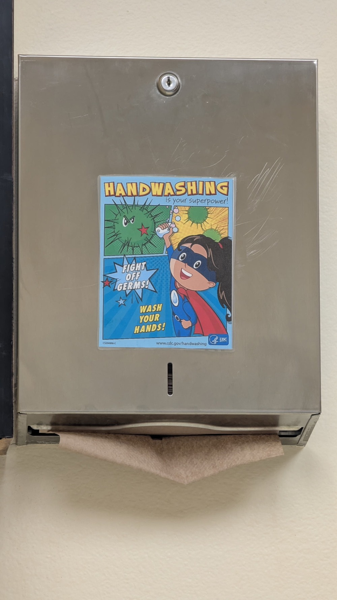

ope...a life ope.3
Wrote up the visit to Dee Wright Observatory.
Also got the following previously written write ups up:
I wonder what Ignaz Semmelweis, the physician in 1800s Hungary who was shunned, mocked, fired, beaten, suffered a nervous breakdown, and killed for suggesting healthcare workers should wash their hands to reduce postpartum mortalities that were three times higher than midwives (who did wash their hands), would think of this comic found in a doctor's examination room?

My wife is very into hockey (she's from Minnesota, dontchaknow) and just told me this: Minnesota Wild sign Kirill Kaprizov to richest deal in NHL history: $136 million over 8 years.
My first thought? I'm not sure I would trade 8 years of my life for $136 million.
Which just goes to show what a dumbass I am.
My instincts tell me to say no (and I don't seem to be paying attention to the more logical parts of my brain (which is, usually, par for the course)).
Just colossal dumbassery on my part.
But no matter which way I look at it, if my current job - and let me tell you I have a pretty plum gig - offered me $136 million to stay for eight more years? I'd say no.1
It just feels wrong.
It doesn't matter that I would still be below retirement age at the end of the 8 year contract and could retire early. It doesn't matter that I would make roughly $136 million more dollars for 8 years of work than if I worked those same 8 years at my current (with step increases) salary. It doesn't matter that I would be lucky - oh so very lucky - to be able to keep my job for the next 8 years at all.
None of that matters.
What seems to matter? I don't know. But good for Kaprizov. He seems smarter than me. And richer. Younger. More athletic. Probably nicer. And? And my wife is very happy that he'll be playing for the Wild.
1My wife, god bless her, would soon set me straight, though.
We had the first sneaker wave warning of the season over the weekend. Seas were rough and beaches were dangerous. We had some big wave surfers out there doing their thing about 100 yards from shore. Never seen them that close before. The waves were so big and the sea was so gnarly that they had a wave runner towing people into the waves and out of the surf.
Stacy and I went for a nice leaf peeping drive yesterday. Sunny all the way to Astoria. Saw some nice Fall foliage. (On the coast itself leaves either stay green and fall off the few deciduous trees around or turn brown then fall off the few deciduous trees around. Not pretty. But go a mile or to inland and the leaves start popping!) Ate at our favorite place in Astoria, Frites and Scoop (though Astoria Brewing Company is a close second) then hit Costco and drove home in the gray, rainy Oregon Coast weather.
Went to a haunted house on Friday with a couple friends. Haven't been to one in a couple decades. It was fun! They did a great job putting it on. Last time I went to a haunted house I was in my early 20s. Stacy had to work and the couple I went with got in a fight and left, so I tagged along with this young mother and her kids. When we finished she asked if I had been scared. I said no. Then she asked why I had been holding onto her jacket so much. Busted!
Short work week coming up. Took a couple days off. Yay me.